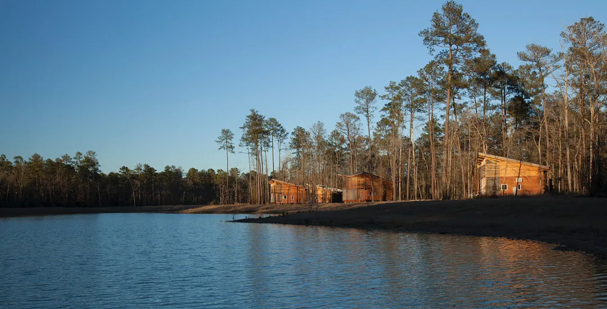

Camping on Lake Houston.
Lake Houston consists of many different communities. It has golf courses, country living, and signature shopping. Many visitors feel comfortable visiting this area as it offers many amenities just like home. There are many schools available and an abundance of health care. Many places offer different types of activities, places such as Generation park, grand Texas Theme Park, and Kings Creek.
Rv parks near Lake Houston
There are many different rv parks near Lake Houston and it is up to you to choose which one you want to stay at. They all offer similar amenities and will all be a good choice. Staff are great and you usually meet very welcoming travelers at these parks.
Lake Houston Wilderness park
FOREST RETREAT RV PARK
Location: 21711 McCleskey Rd, New Caney TX 77537
WILD COUNTRY RV PARK AND MH COMMUNITY
Location: 19135 FM 1485 Rd, New Caney TX 77357
- Pool
- Playground
- Cable TV
- Pet friendly
- Internet
- Laundry
- Dump Station
- Toilets
- Water
- Rv Storage
- Clubs-AOR-ESC
LONE STAR LAKES RV PARK
Location: 20980 US Highway 59, New Caney TX 77357
- Pool
- Playground
- Cable TV
- Internet
- Laundry
- Dump Station
- Toilets
- Water
- Tables
- Firewood
Bastrop State Park
Location: 100 Park Road 1A Bastrop, TX 78602
Peach Country RV Park
Location: 14780 US-290, Stonewall, TX 78671
- FHU with 30/50 amp service
- Large pull-thru sites & wide streets
- Cement patios with picnic tables at each site
- Free Wi-Fi at each site
- Laundry facilities, restrooms & showers
- Fenced dog park
- Large recreation hall with full kitchen & satellite TV
- Charcoal grill for large groups
- Library with books, movies, puzzles & games
- Piano

Lake Houston Wilderness Park sits on 4,786.6 acres of wooded parkland and is the only park that permits overnight camping in the City of Houston park system.
Take your bike on the Forest Trail. You can continue on this trail or divert onto the Peach Creek Trail. Be very careful though as the Forest Trail can sometimes be very narrow at times. The Peach Creek Trail is very easy to ride on and I would suggest this trail for the whole family.
If you decide to stay in one of the available shelters, you have to take into consideration the fact that there are no parking areas close to them. You however have the option of parking your vehicle close-by to unload whatever you might need to stay in the shelter then park over by the park headquarters. There are two A-frames located on one side of the lake and cabins located on the other side of the lake.
Park RulesThere are certain rules you have to follow when you stay at Lake Houston Wilderness Park. The rules are as follows.
 Fees and Passes
Fees and Passes
| Day Fee | Individual Pass | Group Pass |
|---|---|---|
| $3 | $25 (Holder plus three guests) | $60 (Up to 50 people) |
Facilities Information


This park is open all year round and is an RV only park. There are a total of 98 sites available and it sits at an elevation of 108 ft. Visitors of all ages are welcomed in all sites. A total of 74 pull-thru sites have 98 full hookups. Electricity is also available at 20, 30, and 50 amps. There are also 98 and 50 amp sites available. Other amenities offered also include showers, water, dump, laundry, pool, toilets, cable tv, and internet.

The WILD COUNTRY RV PARK AND MH COMMUNITY has a total of 70 sites and all said sites have full hookups. RVs have to be 40 ft or smaller to stay here and there are a total of 6 pull-throughs. Campsites are available with 30/50 amp setups or 35/50 amp setups. There are no tents available but this location caters to all ages.
Amenities include:

The Lone Star Lakes Rv Park has been family owned and operated since 1997. There are many conveniences close by like the George Bush Intercontinental Airport, Texas Medical Center, and Kingwood. There are pull-throughs available and long, wide paved streets so you do not have to worry about traveling on bad roads. Some of the best deals can be seen with their daily/weekly/monthly rates.
RVs can be no more than 40 feet long. The LONE STAR LAKES RV PARK has a total of 85 sites that comprises of 13 pull-throughs, open all year round but there are no tents. All 85 sites have full hookups. Some sites have 30/50 amps while others have 50/85 amps.
Amenities include:

This state park has been open for more than 70 years and people have been returning over and over. There have been many forest fires and floods that have ravaged the area over the past couple of years. However, there has been new life brought to the area by the planting of new trees and new plants.
Despite its bad luck over the years, it has been a great place to bring the whole family for activities like picnics, swimming, biking, fishing, and camping. There is also a group hall where you can rent for any type of reunion. You have the option of staying at one of the historic cabins or sleep at one of the regular campsites available. These campsites cater to everyone's needs as they come in the walk-in type or full hookup sites.
The pool is open from May to September. There is also a trail that is seven miles long which is great for the whole family or take the family fishing in the half-acre, Lake Mina. One other great attraction is the 12-mile hilly drive that allows you to see forested and recovering areas of the Lost Pines.
HoursOpen Daily 6 a.m. - 10 p.m.
Entry Fees
Adults pay $5 daily and children 12 Years or younger enter for free. If you arrive with a group then you pay $3 per day. You might be the type of person who chooses to take the 12-mile drive which will cost $3 daily.

The Peach Country RV Park is in the center of Fredericksburg Hwy 290 Wine Road. With a 4.5/5 stars on TripAdvisor, the Fredericksburg Hwy 290 Wine Road would be a great rv park to stay at on your getaway.
Amenities Include:
Prices
| Type Of Stay | 2 Persons | Extra Persons |
|---|---|---|
| Daily Back-In | $45 | $4 each/day |
| Daily pull-thru | $50 | $4 each/day |
| Weekly Back-in | $286 | $16 each/week |
| Weekly Pull-Thru | $302 | $16 each/week |
| Monthly Back-in | $525 | $50 each/month |
| Monthly Pull-Thru | $578 | $50 each/month |
There are many different places to stay near Lake Houston. People come from all over the world to enjoy the many activities close-by and they keep returning. This is an area that caters to all ages and staff members at each location welcome everyone with open arms as if they see us as all family members. If you decide to take a trip to this location, be prepared to move around every couple of days to enjoy the many activities that the location has to offer.